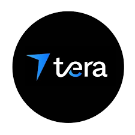
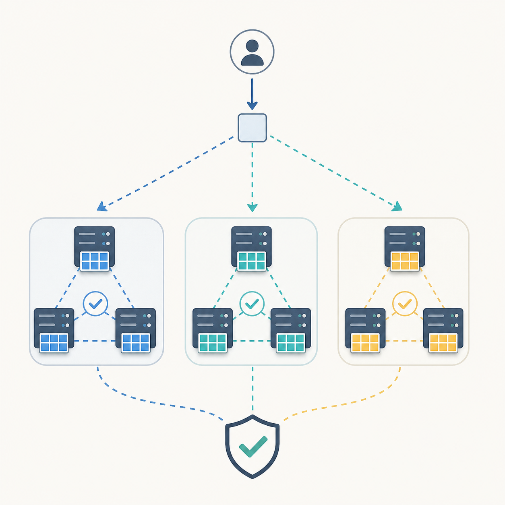
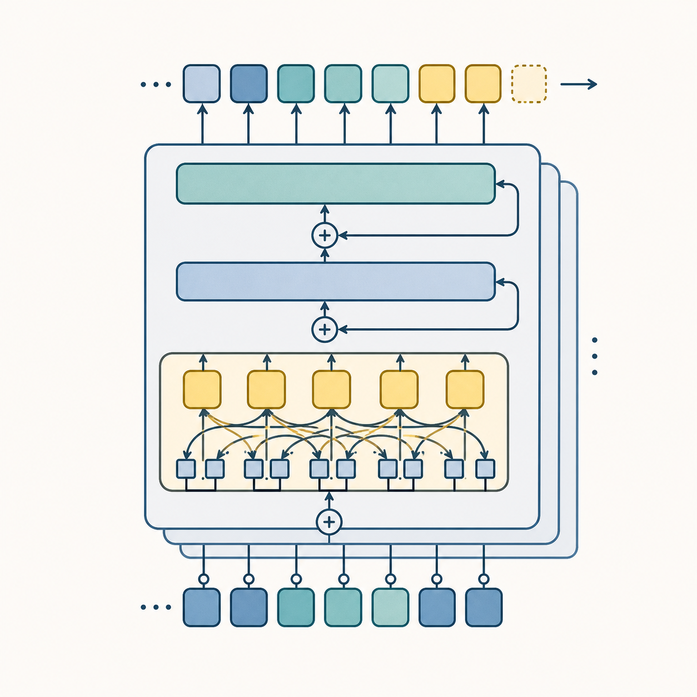
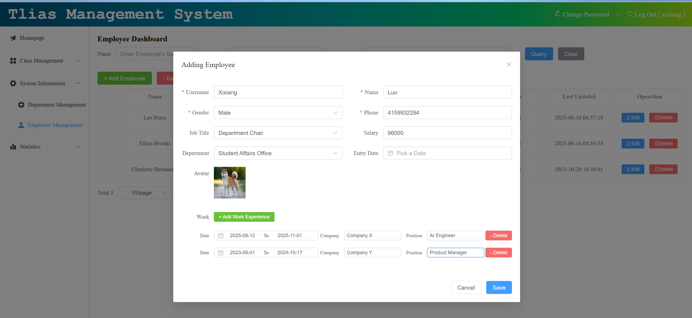

|
Xixiang (Sam) Luo
I am a Computer Science undergraduate at the University of Michigan,
focused on AI infrastructure, agent systems, and distributed systems; I recently completed an
internship at WEX, where I built automated workflows and
production-facing agents.
Email /
CV /
Github
|
|
|
Foreseer Group
Extracted University of Michigan publications from SciSciNet v2,
embedded paper titles with OpenAI embeddings, and applied UMAP
dimensionality reduction. Visualized the resulting publication landscape in MedViz
to reveal research trends and relationships across UM fields over time.
|
|
Cooperative Institute for Great Lakes Research
Automated data pipelines for daily streamflow records across 3,300+ Great Lakes locations and prepared monthly
datasets for forecasting models.
|
Experience
I like building reliable software systems: automating infrastructure, designing backend services,
improving data paths, and making AI tools easier to evaluate and trust in production.
|
|
|
Enterprise Applications Engineer Intern
WEX, Remote, May 2026 - Aug 2026
Built a self-service onboarding workflow for OWI, WEX's centralized identity and authentication platform,
automating Auth0, MongoDB, and HashiCorp Vault provisioning and reducing new application integration time
from 1 week to 5 minutes.
Improved a customer-service AI assistant's card management workflow across 3 user intents and 9 agent tools,
raising task success by 15% through stronger guardrails, evaluation coverage, structured logging, and Arize
Phoenix tracing. Also built CI/CD automation for lower-environment deployments and container promotion.
|
|

|
Software Developer Intern
Tera-SHUTTL LLC, Remote, Dec 2024 - Apr 2025
Built user-facing profile flows and an administrative dashboard with 15+ reusable Svelte components, 17+
REST API integrations, and secure AWS S3 file uploads.
Optimized user pagination queries by analyzing PostgreSQL slow query logs and applying a subquery strategy
with a covering index, reducing latency by 30%. Added SMS-based two-factor authentication with Twilio.
|
|

|
Distributed KV Storage with Sharding
Go, RPC, Paxos, Replication, Sharding
Built a strongly consistent, fault-tolerant in-memory key-value store in Go that handled concurrent read/write
requests using RPC and Paxos-based replication. Increased throughput by sharding the keyspace across multiple
Paxos replica groups.
Designed a shard rebalancing algorithm for joins, leaves, and reassignment with minimal shard movement while
maintaining linearizability and at-most-once semantics during failures and reconfiguration.
|
|

|
Transformer Language Model From Scratch
Python, PyTorch, BPE, Transformers, AdamW
Built an end-to-end Transformer language modeling pipeline from scratch, including tokenization, model
architecture, loss computation, optimization, checkpointing, evaluation, and text generation.
Implemented a Byte-Pair Encoding tokenizer and core PyTorch Transformer components, then trained autoregressive
models on large text corpora and evaluated quality with validation loss and perplexity.
|
|

|
Tlias Educational Management System
Spring Boot, Vue 3, MyBatis, JWT, Docker, Nginx
Built an educational management system with Spring Boot and Vue 3 using a three-tier architecture. Implemented
paginated search over student and employee records with MyBatis dynamic queries, plus JWT authentication and
AOP-based operation logging for security and auditability.
|
|
{kind=link}